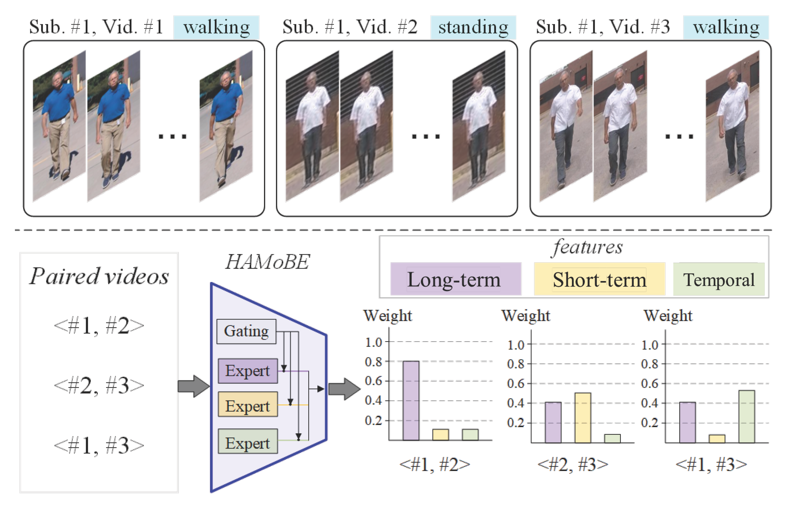
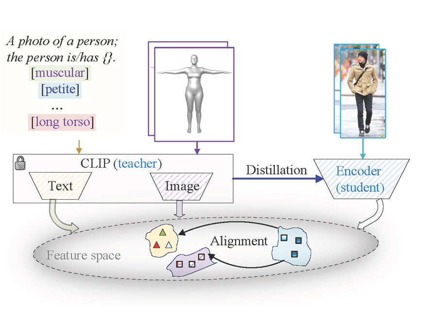
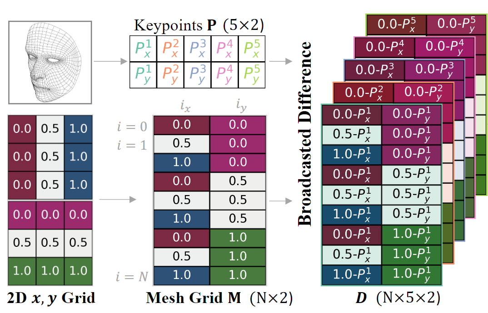
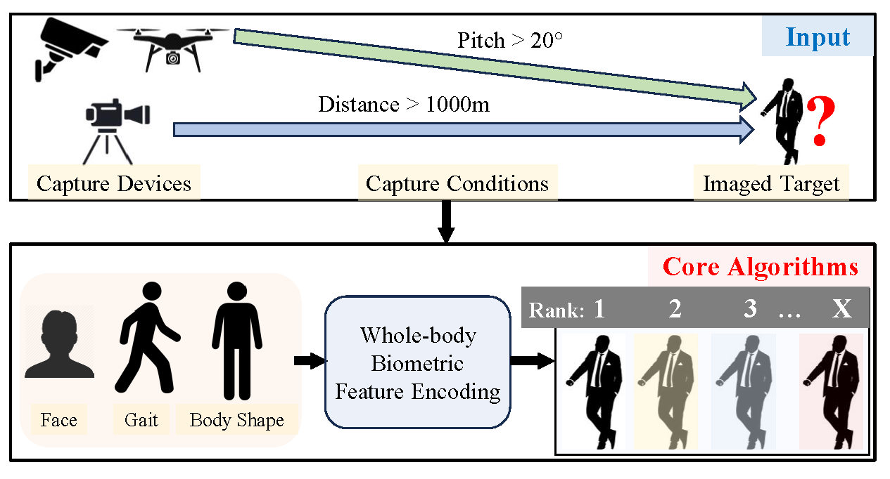
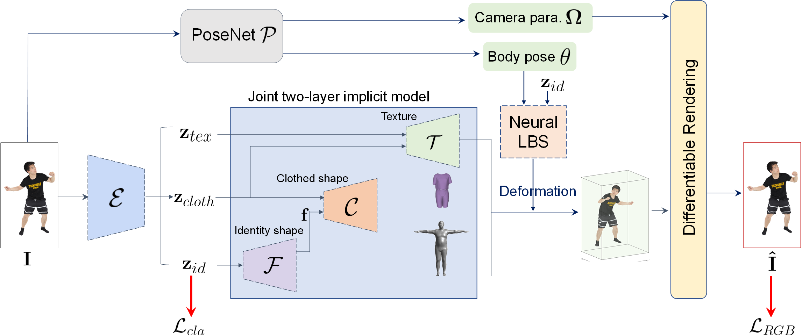
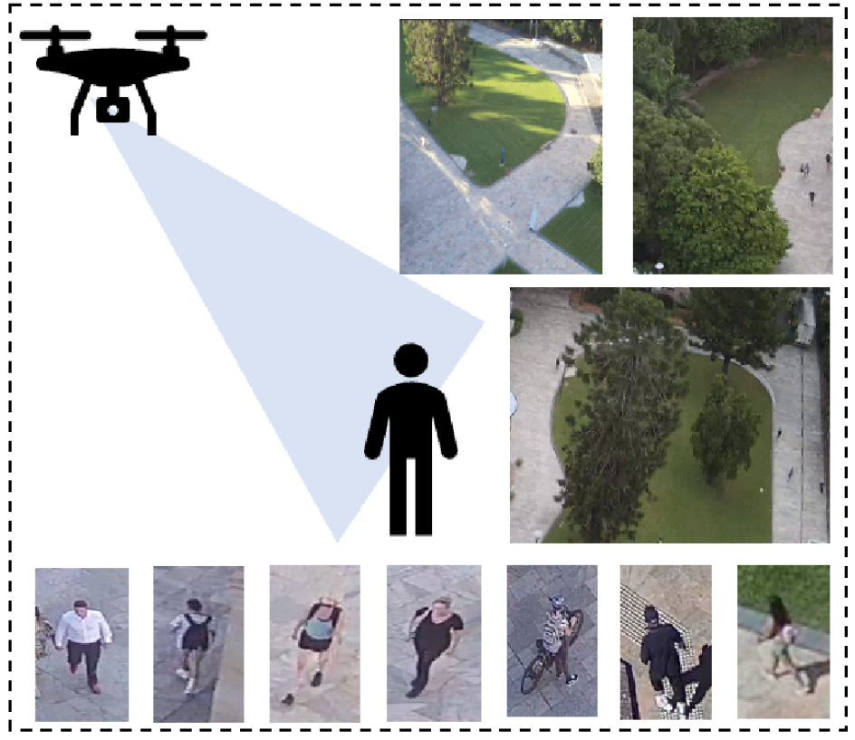
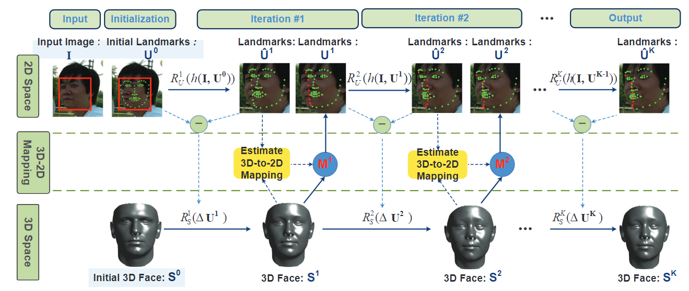

Publications
2025
-  ICCVHAMoBE: Hierarchical and Adaptive Mixture of Biometric Experts for Video-based Person ReIDIEEE/CVF International Conference on Computer Vision (ICCV) , 2025
 arXiv
Person Recognition at Altitude and Range: Fusion of Face, Body Shape and GaitarXiv preprint (arXiv) , 2025
arXiv
Person Recognition at Altitude and Range: Fusion of Face, Body Shape and GaitarXiv preprint (arXiv) , 2025 CVPR
SapiensID: Foundation for Human RecognitionIEEE/CVF Computer Vision and Pattern Recognition (CVPR) , 2025
CVPR
SapiensID: Foundation for Human RecognitionIEEE/CVF Computer Vision and Pattern Recognition (CVPR) , 2025 CVPR
Securing the Skies: A Comprehensive Survey on Anti-UAV Methods, Benchmarking, and Future DirectionsIEEE/CVF Computer Vision and Pattern Recognition (CVPR) , 2025
CVPR
Securing the Skies: A Comprehensive Survey on Anti-UAV Methods, Benchmarking, and Future DirectionsIEEE/CVF Computer Vision and Pattern Recognition (CVPR) , 2025
2024
 ECCV
Open-Set Biometrics: Beyond Good Closed-Set ModelsEuropean Conference on Computer Vision (ECCV) , 2024
ECCV
Open-Set Biometrics: Beyond Good Closed-Set ModelsEuropean Conference on Computer Vision (ECCV) , 2024-  CVPRDistilling CLIP with Dual Guidance for Learning Discriminative Human Body Shape RepresentationIEEE/CVF Computer Vision and Pattern Recognition (CVPR) , 2024
-  CVPRKeyPoint Relative Position Encoding for Face RecognitionIEEE/CVF Computer Vision and Pattern Recognition (CVPR) , 2024
 CVPR
TIGER: Time-Varying Denoising Model for 3D Point Cloud Generation with Diffusion ProcessIEEE/CVF Computer Vision and Pattern Recognition (CVPR) , 2024
CVPR
TIGER: Time-Varying Denoising Model for 3D Point Cloud Generation with Diffusion ProcessIEEE/CVF Computer Vision and Pattern Recognition (CVPR) , 2024-  WACVFarSight: A Physics-Driven Whole-Body Biometric System at Large Distance and AltitudeIEEE/CVF Winter Conference on Applications of Computer Vision (WACV) , 2024
2023
-  ICCVLearning Clothing and Pose Invariant 3D Shape Representation for Long-Term Person Re-IdentificationIEEE/CVF International Conference on Computer Vision (ICCV) , 2023
 INFAMOUS-NeRF: ImproviNg FAce MOdeling Using Semantically-Aligned Hypernetworks with Neural Radiance FieldsarXiv preprint arXiv:2312.16197 , 2023
INFAMOUS-NeRF: ImproviNg FAce MOdeling Using Semantically-Aligned Hypernetworks with Neural Radiance FieldsarXiv preprint arXiv:2312.16197 , 2023-  IJCBAG-ReID 2023: Aerial-Ground Person Re-identification Challenge ResultsIEEE International Joint Conference on Biometrics (IJCB) , 2023
 CVPR
CVPR
2022
 TPAMI, Under Review
The State of Aerial Surveillance: A SurveyIEEE Transactions on Pattern Analysis and Machine Intelligence (TPAMI, Under Review) , 2022
TPAMI, Under Review
The State of Aerial Surveillance: A SurveyIEEE Transactions on Pattern Analysis and Machine Intelligence (TPAMI, Under Review) , 2022
 ECCV
ECCV
2021
 IJCV
IJCV
 CVPR
CVPR
2020
 TPAMI
Joint Face Alignment and 3D Face Reconstruction with Application to Face RecognitionIEEE Transactions on Pattern Analysis and Machine Intelligence (TPAMI) , 2020
TPAMI
Joint Face Alignment and 3D Face Reconstruction with Application to Face RecognitionIEEE Transactions on Pattern Analysis and Machine Intelligence (TPAMI) , 2020
 NeurIPS Oral
NeurIPS Oral
 CVPR
CVPR
2019
 CVPR
CVPR
2018
 CVPR
Disentangling Features in 3D Face Shapes for Joint Face Reconstruction and RecognitionIEEE/CVF Conference on Computer Vision and Pattern Recognition (CVPR) , 2018
CVPR
Disentangling Features in 3D Face Shapes for Joint Face Reconstruction and RecognitionIEEE/CVF Conference on Computer Vision and Pattern Recognition (CVPR) , 2018
2017
 IJCB
Multi-Dim: A Multi-Dimensional Face Database Towards the Application of 3D Technology in Real-World ScenariosIEEE International Joint Conference on Biometrics (IJCB) , 2017
IJCB
Multi-Dim: A Multi-Dimensional Face Database Towards the Application of 3D Technology in Real-World ScenariosIEEE International Joint Conference on Biometrics (IJCB) , 2017
2016
-  ECCV SpotlightJoint Face Alignment and 3D Face ReconstructionEuropean Conference on Computer Vision (ECCV Spotlight) , 2016